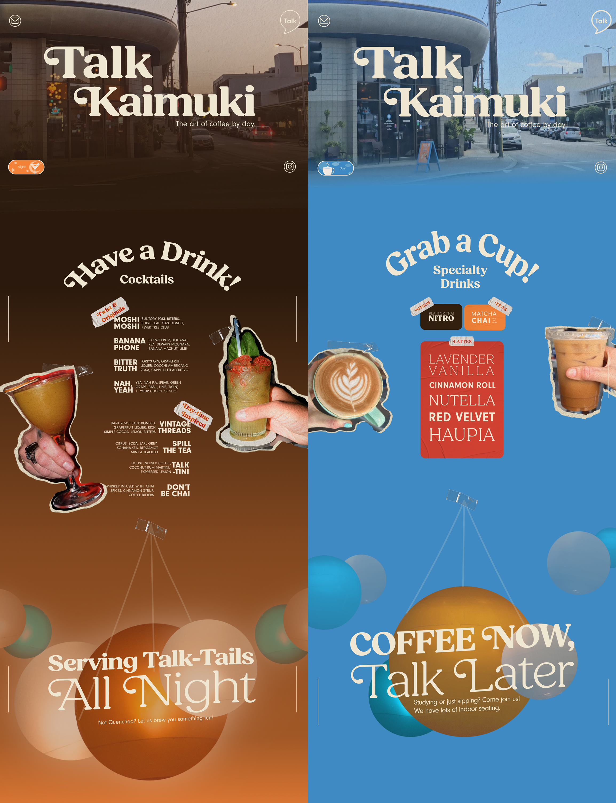
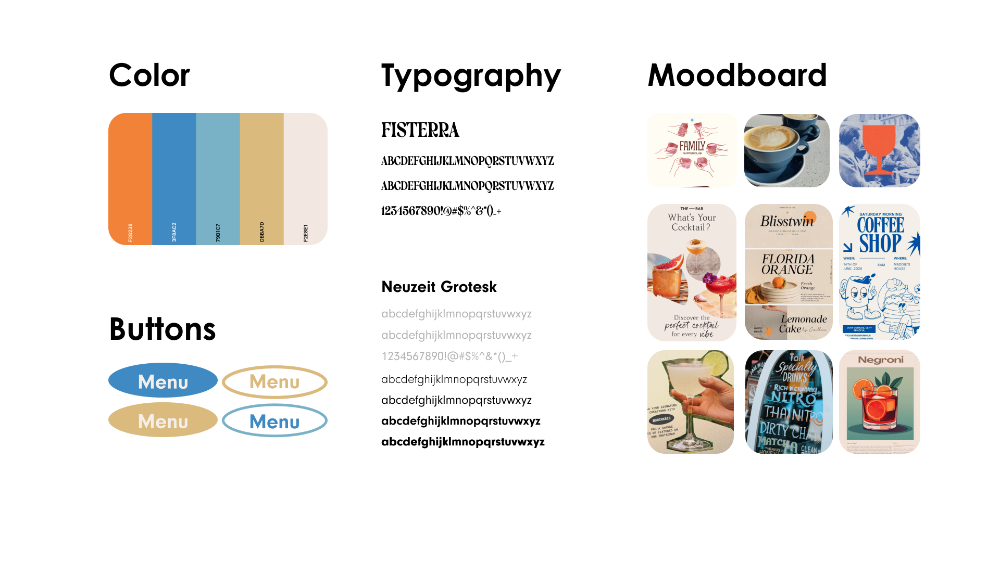
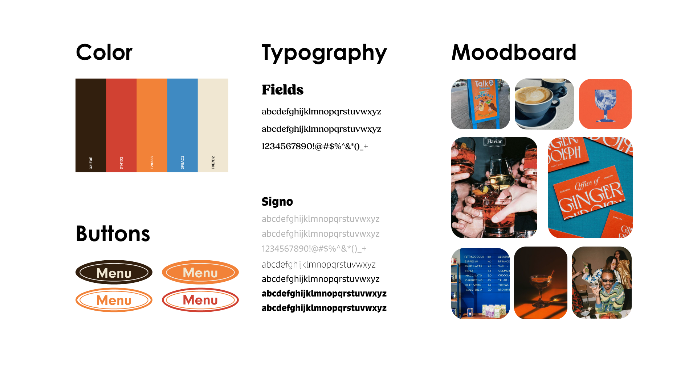
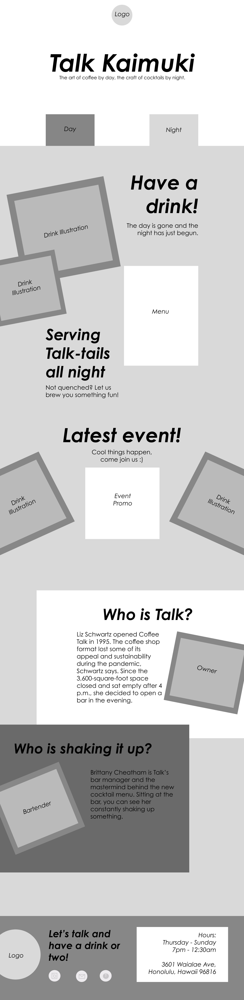
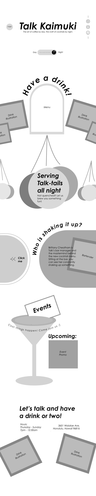

Talk Kaimuki
Cafe to Bar
A Website Design for Talk Kaimuki

About the Project
Goal
The goal was to create a fresh and youthful website design for Talk Kaimuki. Former 'Coffee Talk' has opened up their doors at night and needed a wesbite to match their brand personality while adding in their new menu.
Research and Sketching
Shaken, stirred, and full of flavor! The Talk Team is a crew of cool, trendy baristas and bartenders, mixing up that next-gen energy. I wanted the site design to reflect their vibe, so I tapped into their Instagram feeds to capture their Y2K-inspired style. I also wanted to include two themes, Day and Night (Coffee and Cocktails). The result? A design that is as bold and hip as they are!
Scope
Project Type: Web Design
Software: Figma, Illustrator, Photoshop
Style Tiles + Sitemap
Style Tile A

Style Tile B

Site Map
Wireframes


Prototype
Let's have a drink!
Choosing between a soft theme and something more bold, I decided to combine my designs to create a meld of moody and scrapbooky. Click below to view my protoype or view it on this page (it's clickable and scroll-able!)
∴ Check out the prototype ∴
Coding
Bringing it to life
A whole new challenge was bringing my design elements like my toggle button and theme switching to life. Though my original prototype was ambitious, I enjoyed the task of coding it from scratch. Made with VS Code, you can click below to view the live site.